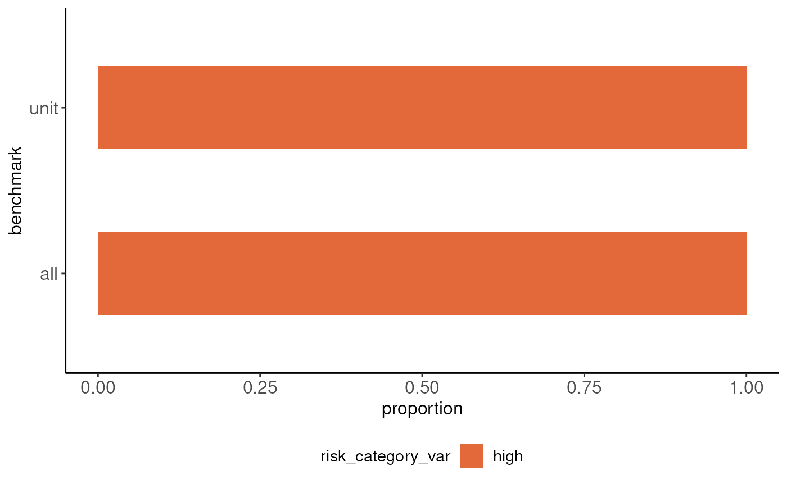

Integration with other components of the tilt system
Source:vignettes/articles/integration-with-tiltIndicator.Rmd
integration-with-tiltIndicator.RmdSetup.
library(tiltToyData)
library(tiltIndicator)
library(tiltPlot)
library(dplyr, warn.conflicts = FALSE)
library(readr, warn.conflicts = FALSE)
options(readr.show_col_types = FALSE)Data.
companies <- read_csv(toy_emissions_profile_any_companies())
products <- read_csv(toy_emissions_profile_products_ecoinvent())Apply tilt methodology.
emissions_profile <- emissions_profile(companies, products)
at_product_level <- unnest_product(emissions_profile)Adapt the ouput of tiltIindicator to the input of tiltPlot.
at_product_level <- at_product_level |>
rename(xctr_risk_category = risk_category, benchmark = grouped_by)Visualize all companies.
bar_plot_emission_profile(at_product_level)
Visualize one specific company.
first_company <- filter(at_product_level, companies_id %in% first(companies_id))
bar_plot_emission_profile(first_company)